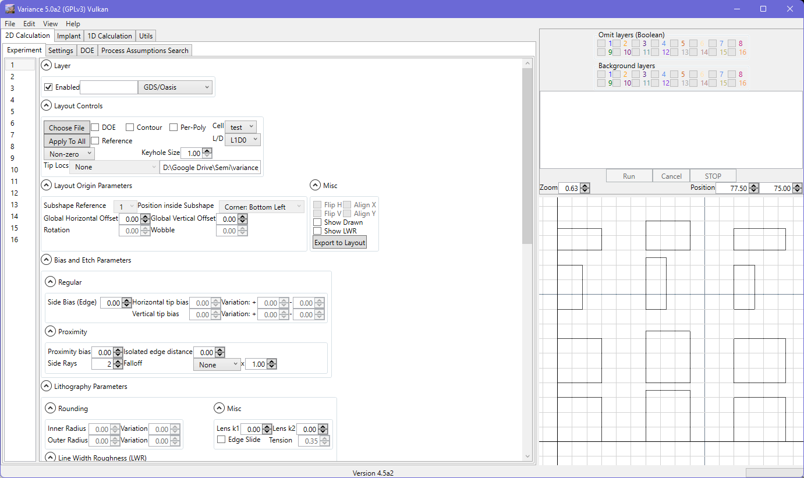
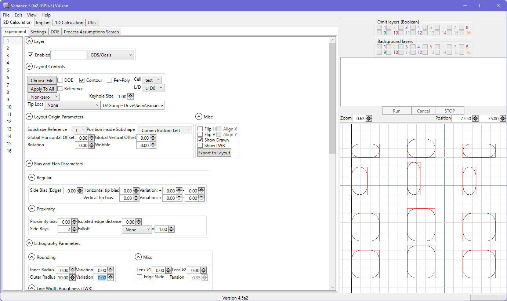
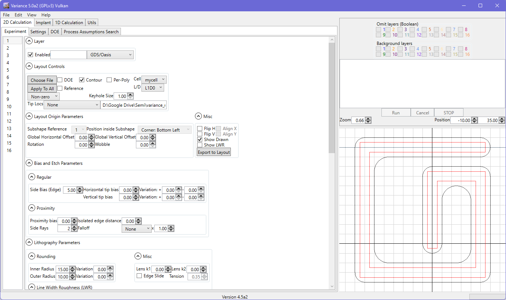

GDS / Oasis
These modes eliminate the subshape setting. You can choose the cell and layer/datatype combination. You can add the layer to the DOE system, and also apply the layout configuration to all other layers in the tool using the displayed controls.
The contour option feeds the internal shape engine with the geometry from the layout file. This permits tips, corner rounding, etc. to be applied to each individual polygon in the layout file.
Polygons are not merged until after contouring has been applied : the input geometry is faithful to the GDS/Oasis source data set.
Contouring can also be used with polygons derived from paths in layout files.
Checking the 'reference' box will set the project to look for the layout file on re-load. If no file is found, a warning will be reported and the baked geometry in the project file will be used. If a layout file is found, it will be read in. The layout file will be queried for the same structure and layer/datatype combination. If either is not found, the baked geometry in the project file will be used. Assuming matching entries are found, the geometry from the layout will be used in preference to the baked geometry. This allows for a project file to be used in regression testing scenarios.